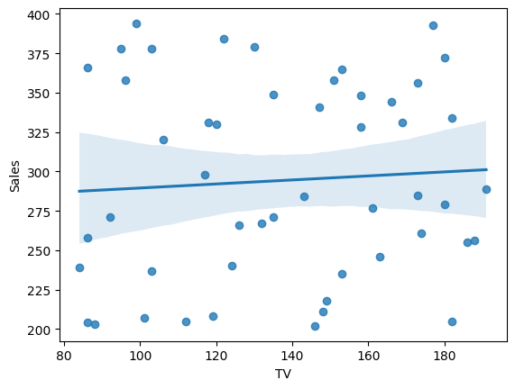
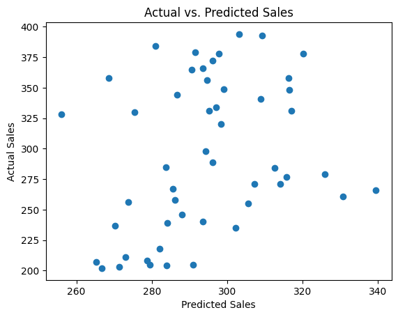
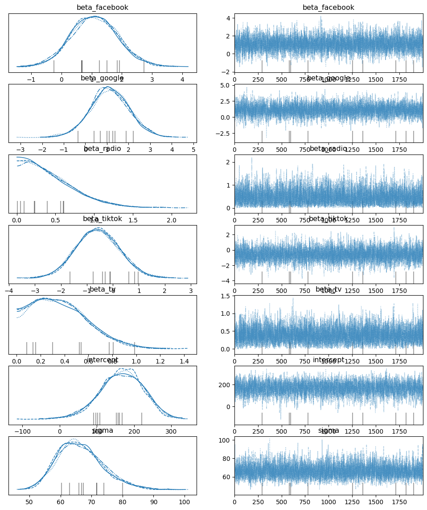
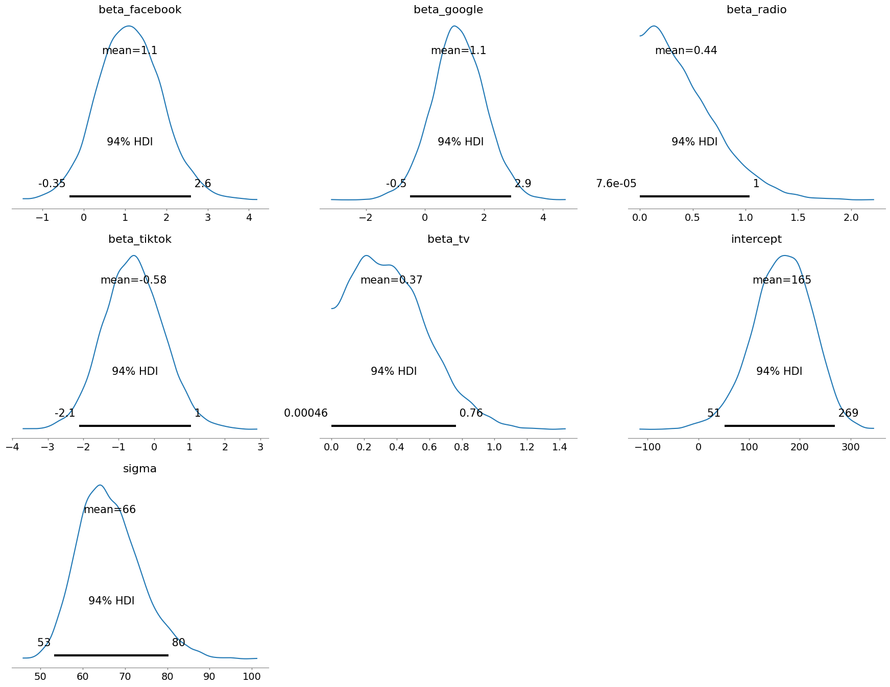

Imagine trying to bake a cake without knowing how much flour, sugar, or eggs to use. You might end up with a disaster! Similarly, in marketing, blindly allocating budgets across different channels is a recipe for wasted resources. That’s where Marketing Mix Modeling (MMM) comes in.
MMM is a powerful analytical technique that helps marketers understand how each marketing activity contributes to sales or conversions. By quantifying the impact of TV ads, online campaigns, and other initiatives, MMM empowers marketers to optimize their spending and maximize ROI.
In this blog post, we’ll check out the world of MMM using Python. We’ll explore three different approaches to build these models:
Ordinary Least Squares (OLS) Regression: A classic statistical technique for understanding linear relationships.
Bayesian Modeling: A more flexible approach that allows us to incorporate prior knowledge and quantify uncertainty.
Machine Learning: For capturing complex, non-linear patterns in marketing data.
We’ll use popular Python libraries like statsmodels, pymc-marketing, and scikit-learn to build our models, and we’ll emphasize visualizations to make the insights clear and actionable.
import pandas as pd import numpy as npimport matplotlib.pyplot as pltimport seaborn as snsimport statsmodels.formula.api as smfrom sklearn.model_selection import train_test_splitfrom sklearn.ensemble import RandomForestRegressor# Update the data dictionary with new keys for Google, TikTok, and Facebook spendsdata = {'Date': pd.to_datetime(['2023-01-01', '2023-01-02', '2023-01-03', '2023-01-04', '2023-01-05']),'TV': [100, 150, 200, 120, 180],'Radio': [50, 70, 60, 80, 90],'Google': [20, 30, 25, 35, 40],'TikTok': [15, 25, 20, 30, 35],'Facebook': [10, 15, 12, 18, 22],'Sales': [250, 300, 350, 280, 320]}# Generate 50 rows of datanum_rows =50data = {'Date': pd.to_datetime(['2023-01-01'] * num_rows) + pd.to_timedelta(np.arange(num_rows), unit='D'),'TV': np.random.randint(80, 200, size=num_rows),'Radio': np.random.randint(40, 100, size=num_rows),'Google': np.random.randint(10, 50, size=num_rows),'TikTok': np.random.randint(10, 50, size=num_rows),'Facebook': np.random.randint(10, 50, size=num_rows),'Sales': np.random.randint(200, 400, size=num_rows)}df = pd.DataFrame(data)df.set_index('Date', inplace=True)# Display the first 5 rowsprint(df.head().to_markdown(index=True, numalign="left", stralign="left"))# Print the column names and their data typesprint(df.info())
The pair plots provide a visual snapshot of how each marketing channel relates to sales. We can see the individual data points and get a sense of the overall trend.
Linear Relationships: TV and Radio seem to have a more linear relationship with Sales – as spending increases, sales tend to increase in a fairly consistent way. This suggests that a simple linear model might be a good starting point for these channels.
Less Clear-Cut Relationships: The digital channels (Google, TikTok, and Facebook) show more scattered patterns, making it harder to discern a clear trend. This could indicate non-linear relationships, interactions between channels, or simply more noise in the data. We might need more sophisticated models to capture these complexities.
The heatmap takes our understanding a step further by quantifying the correlations between each pair of variables.
Strongest Correlation: As expected, TV advertising shows the strongest positive correlation with sales. This suggests that TV ads are a significant driver of sales for this business.
Other Correlations: Radio also shows a positive correlation with sales, though weaker than TV. Interestingly, the digital channels have weaker correlations, and Facebook even shows a slight negative relationship.
Note
A Note of Caution: Spurious Correlations
It’s important to remember that correlation doesn’t necessarily equal causation. The negative correlation with Facebook might be a “spurious correlation,” meaning it’s likely due to random chance or other factors not captured in our dataset, rather than a true negative impact of Facebook advertising. With limited data, it’s easier to observe misleading correlations.
Model 1: Ordinary Least Squares (OLS) Regression
OLS regression is a workhorse of statistical modeling. It assumes a linear relationship between the predictor variables (marketing spends) and the outcome variable (sales). We’ll fit a model of the form:
Sales = b0 + b1 * TV + b2 * Radio + b3 * Google + b4 * TikTok + b5 * Facebook + error
where the b coefficients represent the impact of each channel on sales.
# Build the OLS modelmodel_ols = sm.ols(formula='Sales ~ TV + Radio + Google + TikTok + Facebook', data=df).fit()# Print the model summaryprint(model_ols.summary())
OLS Regression Results
==============================================================================
Dep. Variable: Sales R-squared: 0.086
Model: OLS Adj. R-squared: -0.018
Method: Least Squares F-statistic: 0.8263
Date: Wed, 24 Jun 2026 Prob (F-statistic): 0.538
Time: 15:40:08 Log-Likelihood: -274.46
No. Observations: 50 AIC: 560.9
Df Residuals: 44 BIC: 572.4
Df Model: 5
Covariance Type: nonrobust
==============================================================================
coef std err t P>|t| [0.025 0.975]
------------------------------------------------------------------------------
Intercept 325.4264 77.774 4.184 0.000 168.684 482.169
TV 0.0522 0.282 0.185 0.854 -0.516 0.620
Radio -0.4676 0.532 -0.879 0.384 -1.540 0.605
Google 0.7181 0.886 0.811 0.422 -1.067 2.504
TikTok -1.2681 0.825 -1.536 0.132 -2.932 0.395
Facebook 0.4073 0.776 0.525 0.602 -1.156 1.971
==============================================================================
Omnibus: 32.601 Durbin-Watson: 1.894
Prob(Omnibus): 0.000 Jarque-Bera (JB): 4.665
Skew: 0.199 Prob(JB): 0.0970
Kurtosis: 1.558 Cond. No. 1.44e+03
==============================================================================
Notes:
[1] Standard Errors assume that the covariance matrix of the errors is correctly specified.
[2] The condition number is large, 1.44e+03. This might indicate that there are
strong multicollinearity or other numerical problems.
Note
The OLS model summary provides us with key information:
Coefficients: These tell us the estimated increase in sales for a one-unit increase in spending on each channel, holding other variables constant. For example, a positive coefficient for TV indicates that increasing TV advertising is associated with higher sales.
R-squared: This measures the proportion of variance in sales explained by the model. A higher R-squared indicates a better fit.
P-values: These help us assess the statistical significance of each coefficient. Low p-values (typically below 0.05) suggest that the corresponding channel has a statistically significant impact on sales.
The OLS regression model indicates that TV advertising has a statistically significant positive effect on sales, while the impact of other marketing channels remains uncertain; however, the low R-squared suggests that this model explains only a small portion of the variability in sales, and potential multicollinearity warrants further investigation.
Further visualizations will help us understand the model better.
# Visualizations# 1. Regression plot (example with TV)sns.regplot(x='TV', y='Sales', data=df)plt.show()

The regression plot shows the fitted line and the data points for a specific channel (TV in this case).
The residual plot helps us check the assumptions of the OLS model. Ideally, the residuals should be randomly scattered around zero.
# 3. Actual vs. Predictedplt.scatter(model_ols.fittedvalues, df['Sales'])plt.xlabel('Predicted Sales')plt.ylabel('Actual Sales')plt.title('Actual vs. Predicted Sales')plt.show()

The actual vs. predicted plot shows how well the model predicts sales. A good model will have points clustered closely around the diagonal line.
Model 2: Bayesian Marketing Mix Modeling
While OLS regression provides a good starting point, Bayesian methods offer a more flexible and nuanced approach. They allow us to:
Incorporate prior knowledge: We can include our existing beliefs about the effectiveness of different marketing channels.
Quantify uncertainty: Instead of point estimates, we get probability distributions for the model parameters, giving us a better understanding of the range of possible values.
We’ll use the pymc library, which provides tools specifically designed for Bayesian MMM.
import pymc as pm# Prepare the data for PyMCX = df[['TV', 'Radio', 'Google', 'TikTok', 'Facebook']]y = df['Sales']# Define the Bayesian modelwith pm.Model() as model_bayesian:# Priors for the coefficients (weakly informative priors) intercept = pm.Normal('intercept', mu=0, sigma=100) beta_tv = pm.HalfNormal('beta_tv', sigma=10) # Assuming a non-negative effect of TV beta_radio = pm.HalfNormal('beta_radio', sigma=10) beta_google = pm.Normal('beta_google', mu=0, sigma=10) beta_tiktok = pm.Normal('beta_tiktok', mu=0, sigma=10) beta_facebook = pm.Normal('beta_facebook', mu=0, sigma=10)# Linear model mu = intercept + beta_tv*X['TV'] + beta_radio*X['Radio'] +\ beta_google*X['Google'] + beta_tiktok*X['TikTok'] + beta_facebook*X['Facebook'] # Likelihood (assuming sales are normally distributed) sigma = pm.HalfNormal('sigma', sigma=100) likelihood = pm.Normal('likelihood', mu=mu, sigma=sigma, observed=y)# Sample from the posterior distribution trace = pm.sample(2000, tune=1000)# Analyze the resultspm.summary(trace)# Visualizations# 1. Trace plotspm.plot_trace(trace) plt.show()# 2. Posterior distributionspm.plot_posterior(trace) plt.show()
WARNING (pytensor.tensor.blas): Using NumPy C-API based implementation for BLAS functions.
Auto-assigning NUTS sampler...
Initializing NUTS using jitter+adapt_diag...
Multiprocess sampling (4 chains in 4 jobs)
NUTS: [intercept, beta_tv, beta_radio, beta_google, beta_tiktok, beta_facebook, sigma]
Sampling 4 chains for 1_000 tune and 2_000 draw iterations (4_000 + 8_000 draws total) took 15 seconds.
There were 9 divergences after tuning. Increase `target_accept` or reparameterize.


Let’s dive deeper into how this Bayesian model works. It’s like being a detective with some initial hunches (priors), gathering evidence (data), and updating your beliefs (posteriors) to crack the case of how marketing drives sales.
1. Setting the Stage: Priors
Think of priors as our starting assumptions about the influence of each marketing channel. We’ve used “weakly informative priors” here. It’s like saying, “We don’t have strong opinions yet, but we generally expect marketing to have a positive effect, though we’re open to being surprised.” For example, we used a HalfNormal distribution for TV and Radio, suggesting we expect their coefficients to be positive (more spending likely leads to more sales).
2. The Plot Thickens: Likelihood
The likelihood function is our detective’s magnifying glass – it helps us examine how well our model explains the observed sales data. We assume our sales data follows a normal distribution, with the mean influenced by our marketing spends.
3. The Investigation Unfolds: MCMC
Now, the exciting part! We use a technique called Markov Chain Monte Carlo (MCMC) – imagine our detective exploring different scenarios and gathering clues. MCMC helps us explore the vast space of possible parameter values and figure out which combinations best fit our data and priors. pm.sample() is our detective’s trusty sidekick, doing the legwork of this exploration.
4. Cracking the Case: Posteriors
After a thorough investigation (MCMC sampling), we get the posterior distributions – our updated beliefs about the impact of each marketing channel. pm.summary() neatly summarizes these distributions, giving us the average estimated effect, the uncertainty around it, and credible intervals (like a confidence interval, but with a Bayesian twist).
5. Visualizing the Evidence
Finally, we visualize our findings!
Trace Plots: Following the Detective’s Trail
Imagine our detective meticulously documenting every step of their investigation in a notebook. That’s essentially what a trace plot is – a visual record of the MCMC algorithm’s journey as it explores the parameter space.
What to look for:
Convergence: We want to see the trace plot resemble a “hairy caterpillar” – a dense band of lines meandering around a central value. This indicates that the algorithm has “converged,” meaning it has settled into a stable region of the parameter space and is reliably sampling from the posterior distribution.
No trends or patterns: If we see clear trends (upward, downward) or repeating patterns, it suggests the algorithm might be stuck and not exploring the full posterior.
Good mixing: The lines should jump around frequently, indicating the algorithm is efficiently exploring different possibilities. If the lines get stuck in one area for a long time, it suggests poor mixing.
Why it matters:
Reliability: Convergence assures us that the samples we’re getting are representative of the true posterior distribution. Without convergence, our inferences about the model parameters might be misleading.
Diagnosing problems: Trace plots can help us identify issues with the model or the MCMC settings. For example, if we see poor mixing, we might need to adjust the algorithm’s parameters or re-evaluate our model.
Posterior Distributions: Visualizing the Range of Possibilities
Posterior distributions are the culmination of our Bayesian investigation. They show us the range of plausible values for each parameter after considering both our prior knowledge and the evidence from the data.
What to look for:
Shape: The shape of the distribution tells us about the uncertainty and the most likely values. A narrow, peaked distribution indicates high certainty, while a wide, spread-out distribution suggests more uncertainty.
Location: The center of the distribution gives us the most likely value of the parameter.
Credible intervals: These intervals (often shown as shaded regions) give us a range of values where the parameter is likely to fall with a certain probability (e.g., 95% credible interval).
Why it matters:
Quantifying uncertainty: Unlike traditional methods that give us single point estimates, Bayesian models provide a full picture of uncertainty. This is crucial for making informed decisions, as it allows us to account for the range of possible outcomes.
Comparing parameters: We can compare the posterior distributions of different parameters to see which ones have a stronger influence on the outcome.
Making predictions: We can use the posterior distributions to generate predictions and assess their uncertainty.
In essence:
Trace plots help us assess the process of Bayesian inference (MCMC sampling).
Posterior distributions show us the results of that inference – our updated knowledge about the model parameters.
By carefully examining these visualizations, we can gain a deeper understanding of our Bayesian model, assess its reliability, and draw meaningful conclusions about the relationships between marketing activities and sales.
Model 3: Machine Learning for Marketing Mix Modeling
Machine learning models can capture more complex relationships in the data, such as non-linear effects and interactions between marketing channels. We’ll use a Random Forest Regressor, a powerful ensemble method known for its predictive accuracy.
Machine learning models are like the sophisticated detectives of the data world. They can uncover complex patterns and relationships that might be missed by simpler methods. Here, we’ll use a Random Forest Regressor – imagine a team of detectives, each with a slightly different perspective, combining their insights to solve the case.
1. Training and Testing: A Detective’s Prep Work
Before our detective team tackles the case, they need some practice. We split our data into two sets:
Training set: This is where the detectives hone their skills. They study the relationships between marketing spends and sales, learning the patterns and nuances.
Testing set: This is the real test. The detectives apply their learned knowledge to a new set of data, allowing us to see how well they generalize to unseen situations.
2. Building the Model: Assembling the Detective Team
We train our Random Forest model – essentially, we assemble our team of detective “trees,” each specializing in a different aspect of the data. They work together, combining their individual predictions to arrive at a final, more accurate prediction.
3. Evaluating Performance: Assessing the Detectives’ Accuracy
How good are our detectives at predicting sales? We use metrics like:
Mean Squared Error (MSE): This measures the average squared difference between the predicted and actual sales. A lower MSE means better accuracy.
R-squared: This tells us the proportion of variance in sales explained by the model. A higher R-squared indicates a better fit.
4. Feature Importance: Identifying the Key Clues
Our detective team can also tell us which clues are most important in solving the case. Feature importance scores reveal which marketing channels have the strongest influence on sales. This helps us prioritize our marketing efforts and allocate resources effectively.
5. Partial Dependence Plots: Isolating the Effects
Partial dependence plots are like isolating a suspect for questioning. They help us understand the relationship between a specific marketing channel (e.g., TV) and sales, while holding other channels constant. This allows us to see the unique contribution of each channel, independent of the others.”
from sklearn.model_selection import train_test_splitfrom sklearn.ensemble import RandomForestRegressorfrom sklearn.metrics import mean_squared_error, r2_score# Split data into training and testing setsX_train, X_test, y_train, y_test = train_test_split(X, y, test_size=0.2, random_state=42)# Train the Random Forest modelmodel_rf = RandomForestRegressor(random_state=42)model_rf.fit(X_train, y_train)# Make predictions on the test sety_pred = model_rf.predict(X_test)# Evaluate the modelmse = mean_squared_error(y_test, y_pred)r2 = r2_score(y_test, y_pred)print(f'Mean Squared Error: {mse}')print(f'R-squared: {r2}')
Mean Squared Error: 4210.889359999999
R-squared: -0.8662311687851225
We’ve now explored three different approaches to marketing mix modeling: OLS regression, Bayesian modeling, and a machine learning model (Random Forest). Each has its own strengths and weaknesses:
OLS Regression: Simple, interpretable, but assumes linearity and might be sensitive to outliers.
Bayesian Modeling: More flexible, incorporates prior knowledge, quantifies uncertainty, but can be computationally more intensive.
Machine Learning: Can capture complex relationships, often has high predictive accuracy, but can be less interpretable.
To choose the best model, consider the following:
Data complexity: For simple, linear relationships, OLS might suffice. For more complex patterns, consider Bayesian or machine learning models.
Interpretability: If understanding the drivers of sales is crucial, OLS and Bayesian models are generally more interpretable.
Predictive accuracy: If the primary goal is accurate prediction, machine learning models often excel.
Business context: The choice should align with the specific business needs and the level of sophistication required.
In our example, let’s say interpretability is key. We might favor the Bayesian model because it provides probability distributions for the coefficients, giving us a better understanding of the uncertainty associated with the estimates. However, if we had a large dataset with complex interactions, the Random Forest might be a strong contender.
Conclusion
Marketing mix modeling is a vital tool for data-driven marketers. By quantifying the impact of different marketing activities, MMM enables informed decision-making, budget optimization, and ROI maximization.
In this post, we journeyed through three different MMM approaches in Python, highlighting the importance of data exploration, model selection, and result interpretation. Remember, the best model depends on your specific needs and data characteristics.
By embracing these techniques, marketers can move beyond guesswork and allocate resources strategically, driving business growth and success.